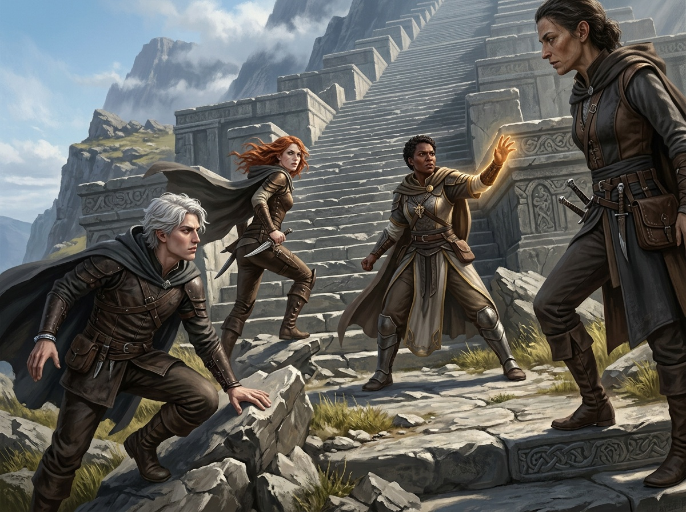
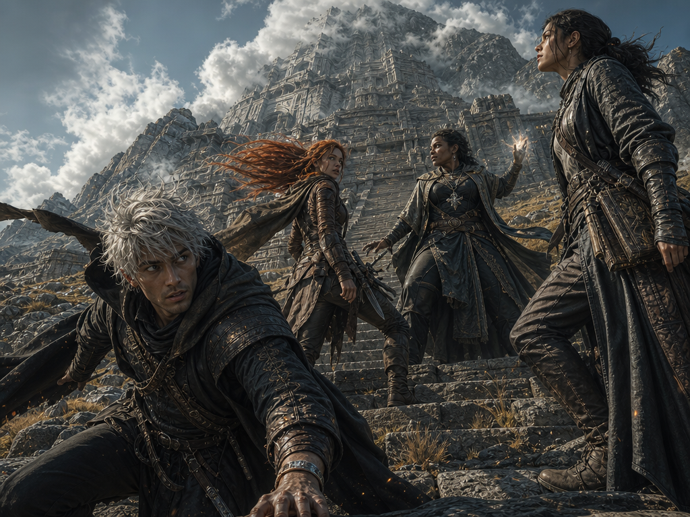
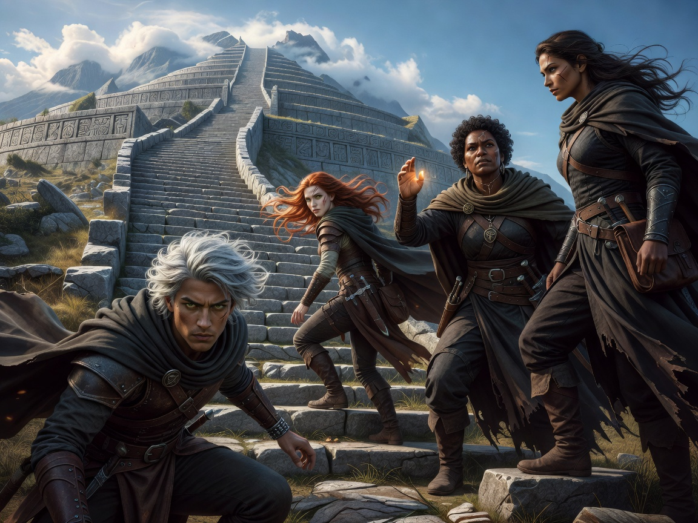
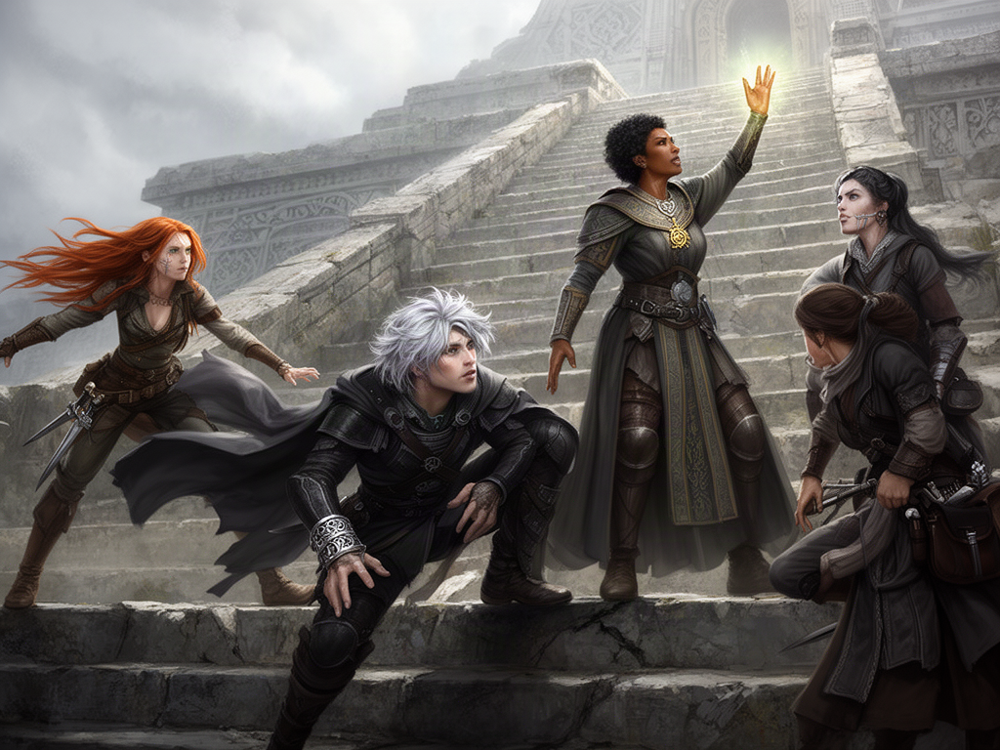
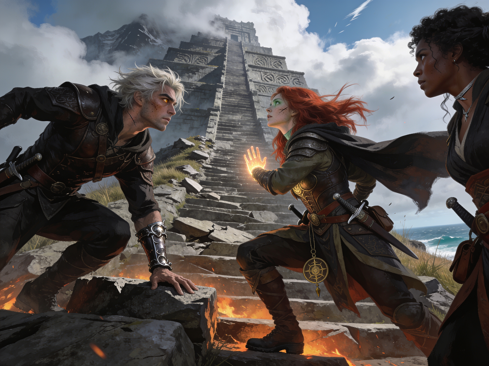
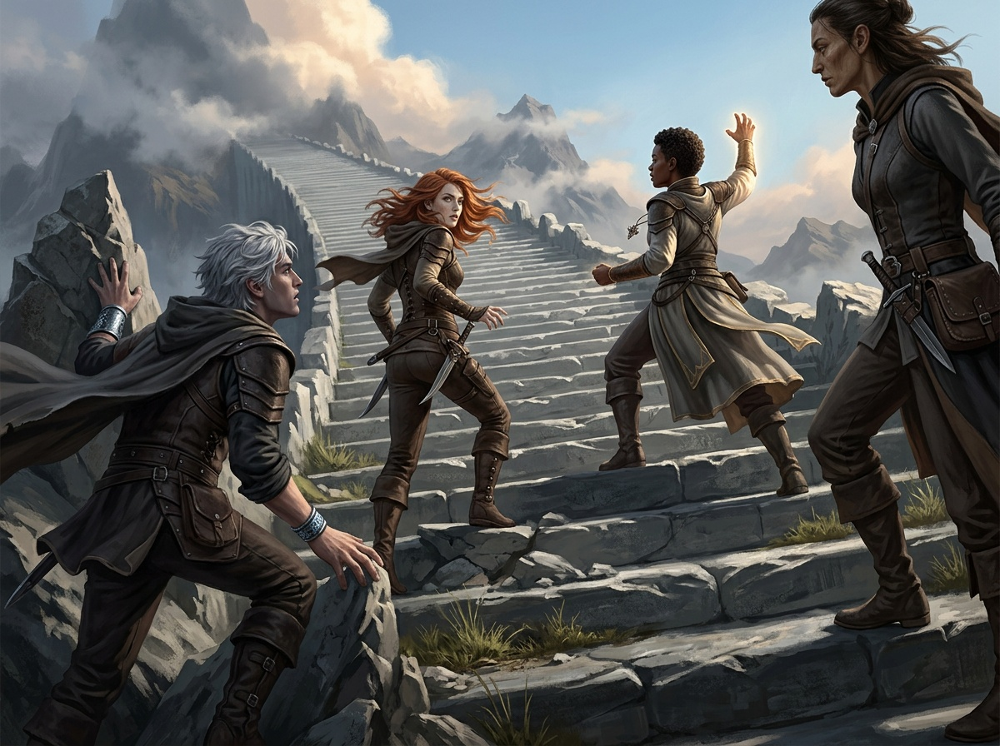
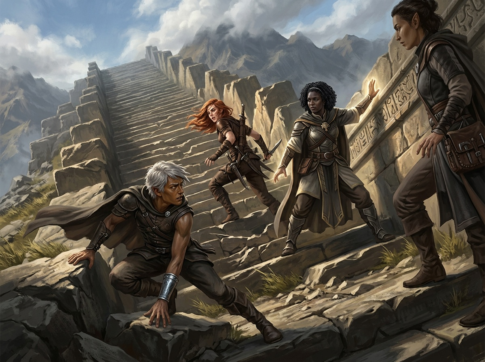

Party Render Engines
▸ The exact prompt (click to expand) — the criterion this page originally omitted
Gaze audit of the WRITTEN prompt: Ammut "twists to stare up at the towering ancient staircase" ✓ · Daeris "her gaze fixed upward on the looming stairs" ✓ · Morwen "leans in studying the terraced stairway's carvings" ✓ · Frizwick "twisted back over her shoulder to check the path behind" — the prompt-writer's ONE sanctioned exception (rear guard). Three of four gazes aim at the stairs in the text; what the engines did with that is the row below.
Eyelines — the owner's read (2026-08-21)
| Engine | Eyeline verdict |
|---|---|
| Nano Banana 2 | Largely successful — except Daeris, whose gaze lands on nothing; Frizwick's backward stare is prompt-authored and at least reads as looking at her party |
| gpt-image-2 | Fail Not a single character looks up the stairs — and the grain/noise is heavy |
| Seedream 4.5 | Beautiful frame, but the characters look all over the place — visual discord; the composition never binds into one event |
| Grok (text-only) | Mixed — Ammut glares at camera (explicitly forbidden in the directive), the others part-oriented to the stairs |
| FLUX.2 | Best convergence of the failures — most faces angle toward Daeris's raised light or up-stairs |
Results at a glance
| Engine | Endpoint (fal) | Count | Binding | Verdict | Price/img | Latency |
|---|---|---|---|---|---|---|
| Nano Banana 2 | fal-ai/nano-banana-2 | 4/4 | Perfect — incl. the bracelet and Morwen's frame-edge crop | Champion | $0.08 | 13s |
| gpt-image-2 (medium) | openai/gpt-image-2 | 4/4 | Correct; minor hair drift on Daeris + Morwen | Strong | ≈$0.04–0.10 | 40s |
| Grok Imagine (text-only) | xai/grok-imagine-image | 4/4 | Correct — the glow, the skin tones, the positions | Budget star | $0.02 | 8s |
| FLUX.2 | fal-ai/flux-2 | 5/4 | Clean binding, but Morwen painted twice | Dup risk | ≈$0.03–0.05 | 4s |
| Seedream 4.5 | fal-ai/bytedance/seedream/v4.5/text-to-image | 3/4 | Morwen dropped; Daeris's glow + symbol migrated onto Frizwick | Mixing-heavy | $0.04 | 29s |
The renders
Nano Banana 2 — 4/4 A

Every contract clause honored: Ammut's crouch-and-brace with the cold-warded bracelet on the wrist, Frizwick twisted back over her shoulder mid-stride, Daeris planted wide with the raised glowing arm and holy symbol, Morwen in profile partially cropped at the frame's edge — the one direction most models ignore entirely. Painterly, on-palette, composition reads as one event.
gpt-image-2 (medium) — 4/4 A−

Exact count, dramatic low-angle dutch tilt, strong likeness separation. Deductions: Daeris's "short tightly curled" hair rendered longer, Morwen's pulled-back hair rendered loose — attribute drift, not misbinding. The slowest arm at 40s. Note the arena-#1 config is literally this (medium quality).
Grok Imagine, text-only — 4/4 A−

Correct count and clean binding at a quarter of Nano's price and 8 seconds. This arm is the experiment that settles #208: the same engine that duplicated seeded faces in the morning's field render composes the party correctly when references are withheld. Slightly more photoreal-hybrid finish than the house painterly target.
FLUX.2 — 5/4 B−

The fastest arm (4s) and the binding is genuinely clean — the glow, the cleric kit, and the skin tones all land on the right people — but Morwen appears twice (once loose-haired, once pulled-back: the model rendered both readings of her description). Best open-weight showing, consistent with its T2I-CoReBench position (83.4 MI, best open binder).
Seedream 4.5 — 3/4 C

Individually gorgeous figures, collectively wrong: Morwen is gone, and Daeris's raised-glowing-hand + holy symbol migrated onto Frizwick while Daeris herself (right edge) lost her cleric kit. This is the exact "mixing-heavy" signature MultiBind measured (58.6% face-binding success, worst of the closed models) — faces preserved, attributes attached to the wrong subjects. Its top-tier described-attribute benchmark scores did not survive contact with a four-character scene.
The body-orientation A/B (same day, Nano, $0.16)
The owner's directive: figure out what reinforces body positioning toward the scene focus. Two candidate structures rendered against the control (Nano's first render above, where Daeris gazed at nothing):
V2 — staging geometry + camera-relative view angles Winner

One opening sentence puts the stairs deeper in frame than every figure with the camera low behind the party; each pose clause carries a view angle ("seen in three-quarter rear view", "seen from behind at the flank"). Result: the whole frame reads as one climb — Daeris, previously astray, converges completely (seen from behind, glowing arm silhouetted against the stairs, face in profile up the steps); Frizwick's torso stays squared up-stairs while her authored rear-glance survives. View-angle words steered bodies where gaze words never did.
V3 — formation-vector opener, original poses Partial

"The four form a single wedge of motion aimed up the Storval Stairs — every torso, hip line, and lead foot points toward the steps." Bodies improve (the wedge reads), but gazes still wander — Daeris's face ends up toward the viewer, Morwen studies the party instead of the carvings. Collective-orientation language moves torsos, not eyes.
Orientation levers — the research synthesis (2026-08-21)
Ranked by evidence strength; shipped state noted per lever:
- Per-figure direct orientation clauses beat scene-level directives — benchmark-grade (GenSpace: models prefer object-centric descriptions; collective rules read as mood words — exactly our V3 result). Shipped (the pose-clause design + v1.691 facing phrases).
- Staging geometry + camera-relative view angles — A/B-validated here (V2); camera vocabulary is vendor-documented first-class control in the Gemini image family. Shipped v1.692.
- Anchor-noun consistency — mechanism papers (text encoders concentrate a concept in 1–2 tokens; pronouns bind to nothing, synonyms mint a second concept) + convergent practice. Corroborating embarrassment: the five-way's own prompt said staircase/stairs/stairway/steps/terraces. Shipped v1.693 — one name, repeated verbatim, in every facing phrase.
- Reference-pose leakage neutralization — vendor-documented (Gemini-family references guide pose/composition, not just identity; competing refs get AVERAGED): four front-facing bust portraits are four "face the camera" votes. Shipped v1.693 — the seed legend reassigns references to identity ONLY.
- Front-loading the composition statement — required for FLUX/Seedream/Grok (vendor-documented positional bias; CLIP-encoder first-mention bias is paper-grade), harmless for Nano/gpt-image (LLM encoders read everything; labeled segments matter more). Shipped v1.692 (the opening geometry sentence).
- Candid framing replaces the camera-negation — the practitioner sweep's most-converged finding: negations fail in every model family, and "nobody looks at the camera" both fails AND injects the token that summons the lens (the Grok arm's protagonist glared straight into it). "Candid, absorbed in the scene, unaware of being observed" is the working positive form. Shipped v1.694.
- Motion-toward verbs over static facing words — "striding toward the X" orients a body by construction; the community's rear-view idiom of choice is motion phrasing, not "facing away". Convergent practice, no controlled A/B. Shipped v1.694.
The honest ceiling (GenSpace): ALL current models remain weak at viewpoint/orientation reasoning — egocentric-only, side-view confusion, left/right reversal under object-perspective phrasing. Prompt structure narrows the gap; it cannot close it. gpt-image-2 with Thinking is the measured leader for strict staging obedience; Nano is the best identity-keeper at 4 portrait-seeded characters (documented 5-character cap). The booru-tag world proves the ceiling's shape: where training captions separate body-facing (`from_behind`), head-facing (`facing_away`), and gaze (`looking_back`) into distinct labels, prompts control all three — in natural-language models only the camera-position axis survives, which is why the levers above are all camera/body-side. The gaze deep-research pass landed below.
Gaze — the adversarially-verified deep-research (99 agents, 3-vote verification per claim)
- Gaze is a relation clause — the weakest measured instruction class. Multi-relation fidelity tops out ~83/100 (Nano Banana Pro) down to ~72 (FLUX.2-dev/Qwen); expect roughly 1-in-5 gaze clauses to fail per image AT BEST. Single-prompt techniques raise hit rates; nothing guarantees eyelines without a geometry-conditioned pipeline (unavailable in a one-call API). 3-0, T2I-CoReBench ICLR 2026 + TextGaze
- Dual-channel redundancy is the mitigation: head and eyes are separately-describable axes — state both per character ("head turned toward the X, eyes fixed on the X"). Shipped v1.695
- The "eye contact" trap: booru-trained ontology defines it as strictly MUTUAL gaze (machine-enforced implication) — in a group scene it turns characters toward each other, not the focal point. The prompt-writer is now taught to reserve it for deliberate two-character beats. Shipped v1.695
- Prose, never tags, for our model class — vendor-verified (Google explicitly rejects keyword lists); booru gaze tags convert to prose equivalents. Vendor guidance contains ZERO gaze technique — camera language is the only sanctioned channel, so everything here is community-derived and now A/B territory. 3-0
- Per-character explicit, never scene-level inference — "the party watches the altar" is a reasoning ask (measurably weaker); "Kara's eyes on the altar; Dorn's gaze fixed on the altar" is a composition ask. Confirms the per-clause design. 3-0
- Refuted for calibration (0-3 votes): "bare looking at viewer suffices alone on booru models" — refuted; "gaze words are under-captioned in training data" (the most-cited community explanation for gaze unreliability) — refuted as unsupported lore.
- Open question the literature cannot answer: actual per-character gaze compliance rates on our shipping models, and whether dual-channel measurably beats single-clause — an in-house A/B grid (the #209b method) is the instrument if the field watch warrants it.
What the research says (6 sweeps, 2026-08-21)
Directly measured composition (T2I-CoReBench MI/MA — closest published analog to party scenes)
| Model | Multiple Instances | Multiple Attributes |
|---|---|---|
| Nano Banana 2 | 92.6 | 85.1 |
| Seedream 4.5 | 92.0 | 87.1 |
| Nano Banana Pro | 91.9 | 85.5 |
| GPT-Image-1.5 | 87.0 | 83.4 |
| FLUX.2-dev | 83.4 | 72.7 |
| Qwen-Image-2512 | 79.6 | 65.6 |
| HiDream-I1 | 62.0 | 42.9 |
Benchmarks measure ~25 generic objects, not 4 named characters — which is why Seedream can top MA on paper and still fuse a party in practice: the failure our test exposes is reference/identity attachment, a dimension only the MultiBind study measures (Nano family 84% ≈ GPT-Image 82% ≫ Seedream 59% > Qwen-edit 44%). Our five-way agrees with MultiBind, not with CoReBench.
The rest, compressed
- Arenas (proxy, aesthetic-heavy): gpt-image-2 #1 everywhere (+242 Elo T2I); Grok Imagine 2.0 #3; Nano 2 top-7; Seedream 5.0-pro and Qwen 3.0-pro exist but weren't fal-verified in time.
- Vendor contracts: Google is the only vendor with a numbered multi-character claim ("identity for up to 5 people"), independently reproduced by practitioners (a 5-character restaurant scene; a correct 4-person count). Every other "multi-reference consistency" claim (FLUX.2's 10 refs, Seedream's 10, Grok's 5) ships without numbers.
- Practitioner convergence: gpt-image duplicates faces when asked for specific counts (community-documented); Ideogram reviews say "avoid multi-person"; Midjourney still takes ONE character reference and wants stitched sheets; the entire regional-prompting tool ecosystem exists because base diffusion models blur two described people together.
- Dead ends: Imagen 4 — delisted from fal (all endpoints 404). Reve 2.x (layout-first, promising) — not on fal. Kling O3 claims "flawless consistency" ($0.028, 10 refs, @ImageN addressing) but has zero independent group-scene evidence — a candidate for a future probe, not a pick.
The best five for party scenes
- Nano Banana 2 — the only engine that passed with references AND text; the vendor 5-character contract is real. Keep as the party default.
- gpt-image-2 (medium) — 4/4 with minor drift; the strongest challenger. Integration note: fal-standard image_size:"landscape_4_3", quality tiers, ~40s.
- Grok Imagine, text-only — 4/4 at $0.02/8s; the price-performance pick once #208 remedy ② withholds references for party scenes.
- FLUX.2 — cleanest binding of the non-passers, fastest arm, open-weight; needs the exact-count clause (its one failure was a duplicate, not a misbind).
- Seedream 4.5 — carried by benchmarks and price, not by this test; usable for solo/duo shots, not the party.
What this means for RENDER_MODELS (#208)
- Remedy ② upgraded: the party-scene seed policy should cover Grok too — party scenes render text-only on every engine except Nano Banana 2 (single-seed models drop the solo portrait; Grok drops its multiSeed refs). Nano keeps references — proven twice today.
- Remedy ① (exact-count legend clause) still worth shipping for the cases where refs stay on.
- Listing candidates: gpt-image-2 and FLUX.2 are one-entry adds to the PROVIDERS-style RENDER_MODELS table if wanted; Grok is already listed and becomes party-viable via ②.
Artifacts: renders in DOC/Research/party_render_2026-08-21/ · field evidence TODO #208 · research: two catalog sweeps (endpoints/pricing verified on primary fal pages 2026-08-21, incl. the prefix trap — newest partner models drop the fal-ai/ prefix), one benchmark sweep (T2I-CoReBench, GenEval 2, MultiBind, UniGenBench++, CogCanvas, MIBE), one vendor-evidence sweep, one practitioner sweep. Total experiment cost ≈ $0.23 + research API time.